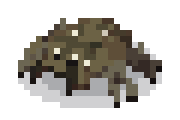
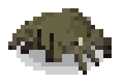
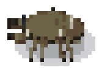
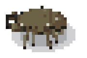

Shore-Spawn
Shore-Spawn is a creature of Under the Sink (level 8–9).
Shore-Spawn is a creature of Under the Sink (level 8–9).
In Under the Sink
In Under the Sink the Shore-Spawn is level 8–9, a normal foe. It is found in The Rootbound Anchorage (proposed name); nothing there comes back until the copy resets. It can drop rarely one of 13 rare items.
Gallery







